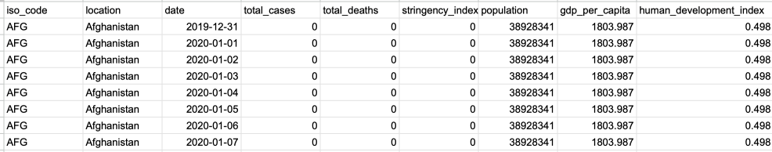

Featires of Economy Dataset
- i. Code(string)
- ii. location(string)
- iii. date(datetime)
- iv. gdp_per_capita(int)
- v. human_development_index(int)
- vi. total_cases(int)
- vii. total_deaths(int)
- viii. population(int)
- ix. stringency_index(int)
Sample Dataset of Economy
